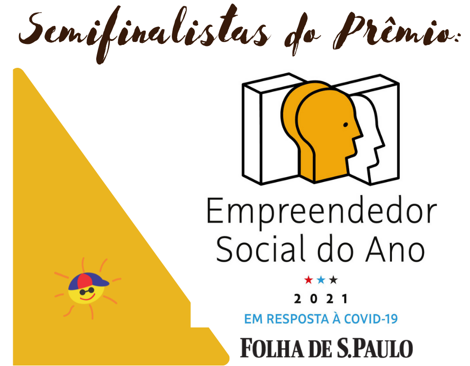
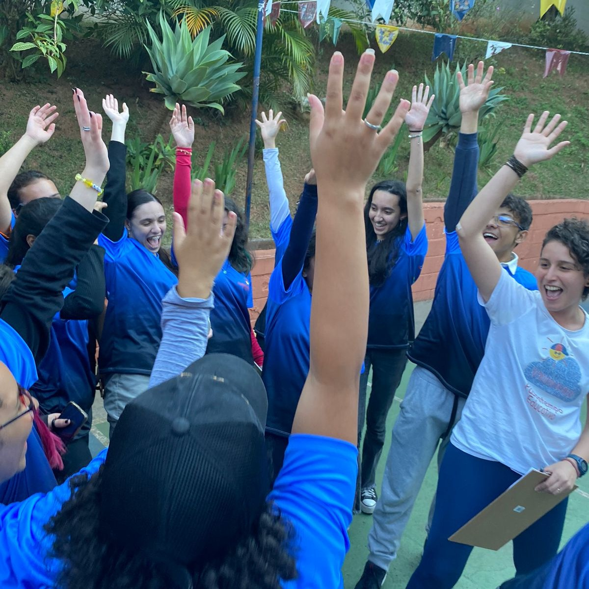
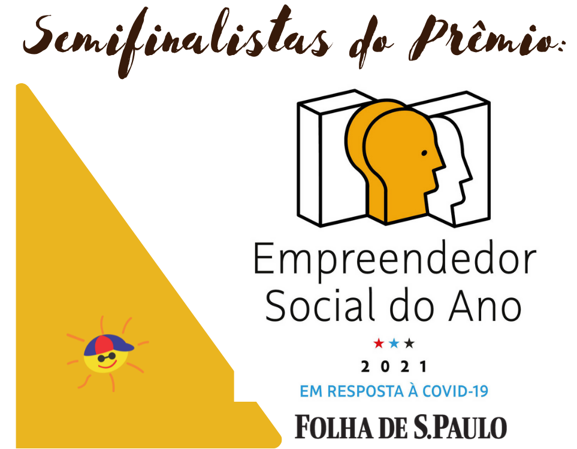
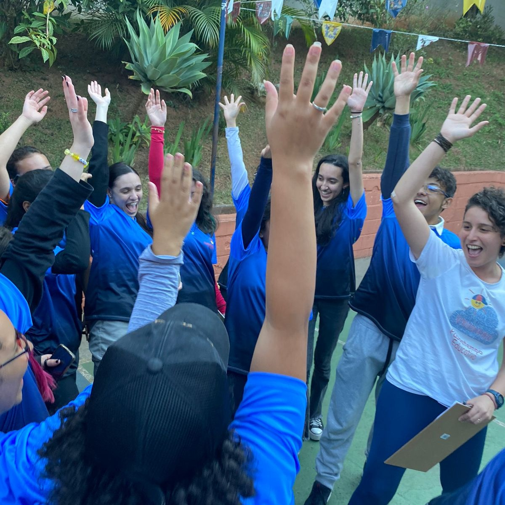

Passatempo Educativo é uma organização não governamental, sem fins lucrativos, que desenvolve projetos na área educacional, cultural, preservação ambiental e desenvolvimento do turismo sustentável. Reconhecida pelo Ministério da Justiça como OSCIP – Organização Social Civil de Interesse Público sob nº 08071005566.
Atuando há 22 anos na área da educação, nossos projetos têm como objetivos dar continuidade no processo ensino-aprendizagem através de situações práticas com atividades nas escolas, empresas, excursões, estudos do meio, visitas monitoradas, oficinas, workshops, palestras, jogos e gincanas dirigidos, projetos de incentivo à leitura e suporte didático para pais e professores além de elaboração de material pedagógico complementar.
Reinventar os processos educativos e descobrir nosso importante papel na sociedade, através dos projetos Eletivas Novo Ensino Médio, Reforço Interativo, Livros em Ação, STEAM, Robótica nas Escolas entre outros, que tem impactado a educação de milhares de crianças.

Prêmio Itau Unicef 9ª Edição Semifinalista Nacional e Finalista Regional dentre 2922 projetos
Semifinalista do Prêmio Empreendedor Social
Folha de SP 2021
Prêmio Albertina Brasil Ministério da Cultura - Finalista - Projeto Cultura Acessível
Prêmio Generosidade - Revista Época 2008 Finalista Nacional 10 melhores histórias de solidariedade
Programa AID 2014/2015 Embaixada da Austrália Projeto Livros em Ação entre os 10 escolhidos de 700 inscritos e em 2020/2021 - Projeto Reforço Interativo.
O ICFO (International Commitee on Fundraising Organizations) é o maior e mais renomado comitê certificador
de
idoneidade de ONGs do mundo!
É como o Oscar para o terceiro setor e pouquíssimas ONGs conquistam tal certificação.
A Passatempo Educativo foi certificada pela Phomenta, que é a única representante do ICFO no Brasil.Foram
avaliados 5 pilares : Financeiro, Jurídico, Gestão e Governança, Potencial de Impacto e
Comunicação/Transparência, obtivemos a nota 95,30%.
O ICFO (International Commitee on Fundraising Organizations) é o maior e mais renomado comitê certificador
de
idoneidade de ONGs do mundo!
É como o Oscar para o terceiro setor e pouquíssimas ONGs conquistam tal certificação.
A Passatempo Educativo foi certificada pela Phomenta, que é a única representante do ICFO no Brasil.Foram
avaliados 5 pilares : Financeiro, Jurídico, Gestão e Governança, Potencial de Impacto e
Comunicação/Transparência, obtivemos a nota 95,30%.

STEAM & Robótica nas Escolas - Um projeto incrível que envolve 5 áreas do conhecimento: engenharia, ciência,
tecnologia, artes e matemática.
Livros em Ação - Escolas Particulares - Faça da sua escola uma parceira da nossa Biblioteca Itinerante com
mais de 4000 livros e leve oficinas temáticas para seus alunos.
Agenda 2030 - Você já pensou em levar para o ambiente corporativo a abordagem da Agenda 2030 da ONU de forma
leve e lúdica para seus colaboradores? O Game 2030 versões online e presencial e o Show de Mágicas das ODS
estão sensacionais.
Projeto Reforço Interativo é escolhido pela Embaixada da Austrália na categoria educação como melhor projeto
em "Resposta aos impactos da COVID-19 entre os mais vulneráveis no Brasil". Este ano a programação está
atendendo escolas de estados da Região Norte, Nordeste, Centro-Oeste e Sudeste. Torradinhas Tik Tok e
Edu-Canto são os novos projetos que estão sendo preparados com muito carinho. Os melhores projetos
educativos online!
Passatempo Educativo é selecionada, dentre 706 OSCs para participar do Programa Instituto Malwee Acelera.
Será uma jornada consultiva promovida pela Phomenta para acelerar o processo de crescimento da nossa
organização.
Facilitar caminhos para desenvolver pessoas e territórios, através do brincar livre e essencial de ser,
conviver, mobilizar e transformar. Curso destinado a diretores, coordenadores pedagógicos, professores,
gestores corporativos de todo o Brasil, o Workshop Palhaçaria Brincante com atriz e facilitadora Nayara
Albuquerque tem mostrado para esses profissionais as necessidades de permitir-se adaptarmos às mudanças
nesse período pandêmico.
Saiba mais, clicando aqui.